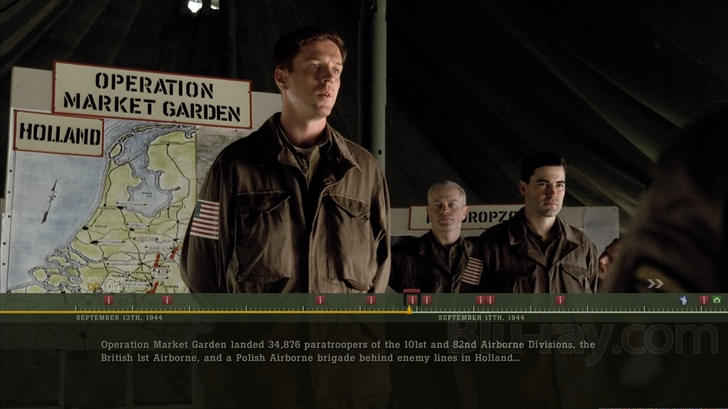

Yuko Takagi
Software Engineer
@yukotakagi
Navigate using arrow keys, or swipe on phones
Skills
- JavaScript, Python, shell
- HTML5/CSS
- Django, Ember.js, Backbone.js
- Testing with Mocha, QUnit
Work Experience
Press down arrow
Front-end Engineer
@ Google
Jul. 2015 to Present
Front-end development for store.nest.com with Ember.js
Sr. Software Engineer
@ Pandora
Dec. 2013 to May 2015
Full stack web development in Core Engineering team
Software Engineer
@ Perfect Market. Inc (acquired by Taboola)
Mar. 2011 to Sep. 2013
- Front-end/middleware development
- Small, agile start-up envinronment
Java Developer
@ Deluxe Digital Studios
Jun. 2008 to Mar. 2013
- Built menus and special features for Blu-ray discs
- High-profile movies for major Hollywood studios
Web Developer Intern
@ California State University Northridge
Student Affairs IT Department
Jul. 2007 to Jun. 2008
- Built web apps for students and faculties
Portfolio #1
Blu-ray Menus & Games
- Java Micro Edition
- Fully compliant with Blu-ray Disc specs
Fight Club
- Lead the team and coded the entire menus and game
- Earned 1733 reviews, 4.5 stars on Amazon
Alien Anthology
- 6-disc box set
- Developed disc-unbound bookmarking feature
Band of Brothers

- 6-disc box set
- Developed menus and feature-long trivia track
Education
B.S. in Computer Science
Starfleet Academy a.k.a.
California State University, Northridge
Human-Computer Interaction
Prof. Scott Klemmer @ Stanford University
Computing for Data Analytics
Prof. Roger D. Peng @ Johns Hopkins University